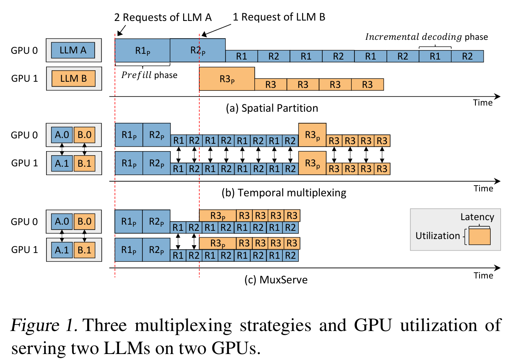
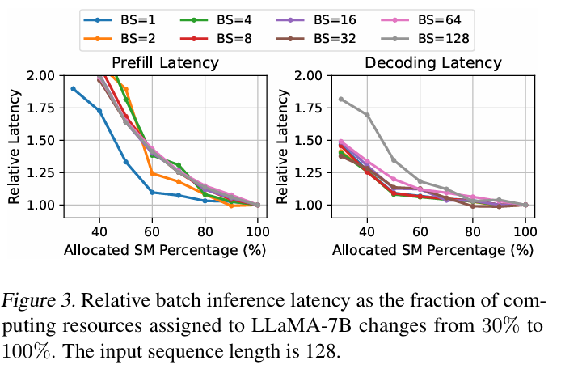
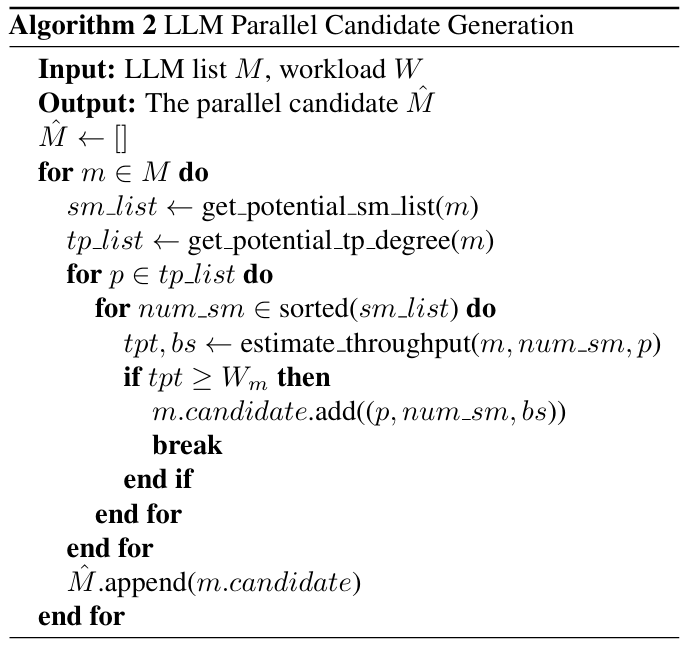
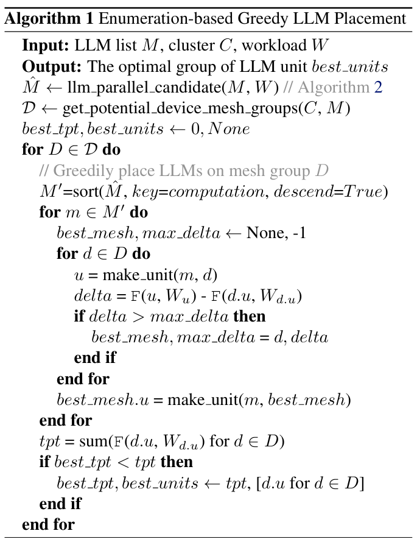
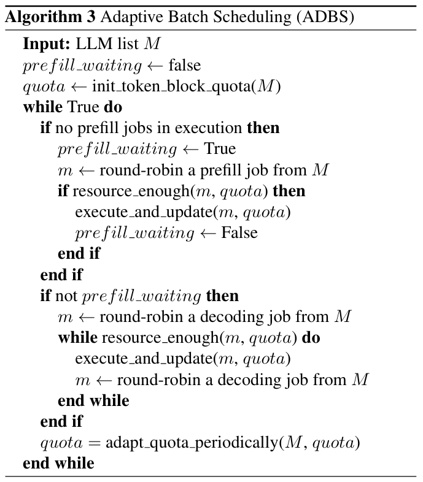
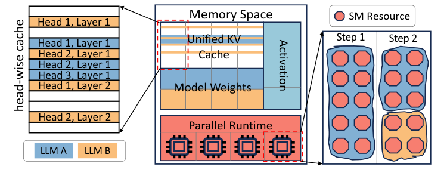
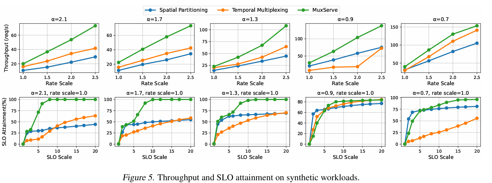
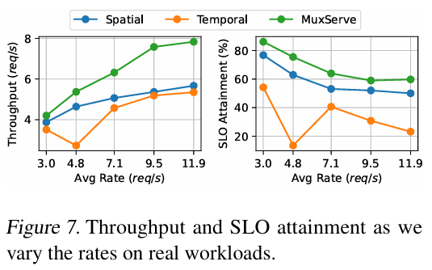
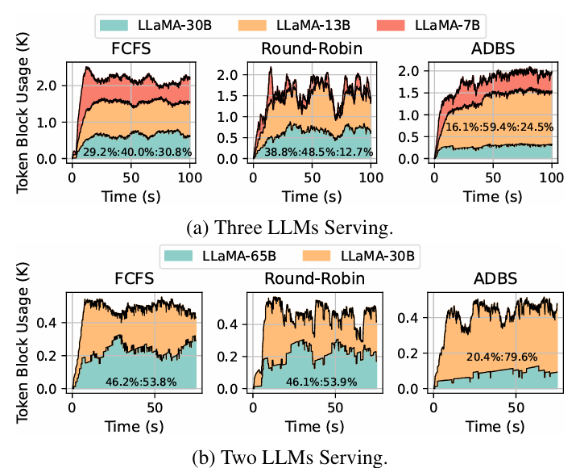
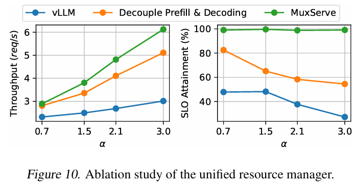

MuxServe: Flexible Spatial-Temporal Multiplexing for Multiple LLM Serving（ICML 2024）
论文链接：PMLR ICML 2024 ｜ arXiv
多模型、resource-level LLM serving 系统。不是 DAG-aware，而是解决多个不同 LLM 如何共享 GPU、SM 和 KV Cache。对于会调用多个模型的 Agent DAG，它可以作为底层模型放置和资源复用机制。
Background / Motivation
LLM endpoint provider 通常同时部署不同规模、用途和流行度的模型。固定为每个模型划分 GPU 会出现：热门模型排队，冷门模型长期占着空闲 GPU。
已有两种方式：
- Spatial Partitioning： 每个模型固定占用一组 GPU，模型之间隔离，但无法利用冷门模型的空闲资源。
- Temporal Multiplexing： 多个模型在同一 GPU mesh 上交替执行；它仍把一次 LLM 推理整体看待，没有利用 Prefill 与 Decode 的资源差异。

Figure 1 中，Spatial Partitioning 的 GPU 1 在等待 LLM B 请求时空闲；Temporal Multiplexing 让模型轮流使用 GPU，但 Decode 本身利用率低，还有部分可以利用的空间剩余；MuxServe 将不同模型的作业并发执行，更早完成全部请求。
Key Insight
- 模型流行度不同，可以互补共置。 将高请求率模型和低请求率模型放在同一 GPU mesh，能够共享显存和计算资源。
- Prefill 与 Decode 的资源特征不同。 Prefill 计算密集；Decode 每轮 Token 少，通常不能占满 SM。将某个模型的 Prefill 或 Decode 与另一个模型的 Decode 共置，可以填补空闲计算资源，之前的论文做过了。

Figure 3 将 LLaMA-7B 可使用的 SM 从 100% 降低到约 60%–70%。Decode 延迟在多数 batch 下增加较小，说明它没有充分使用全部 SM；这些 SM 可以分给其他模型。Prefill 对 SM 减少更敏感，仍需要较集中的计算资源。
Core Design
MuxServe 先根据模型规模和请求率决定放置，再在每个共置组内调度 Prefill/Decode，最后由统一资源管理器落实 SM 和显存共享。
1. LLM Unit 与流行度感知放置
LLM Unit 表示一组共置的模型及其 GPU mesh。MuxServe 使用历史流量（profiling）估计各模型请求率，目标是在公平约束下最大化所有 Unit 的总吞吐。
虽然论文编号是 Algorithm 1 和 Algorithm 2，但实际执行时，Algorithm 1 会先调用 Algorithm 2。
第一步：Algorithm 2 生成并行候选配置。

对每个模型，Algorithm 2 枚举可用的 Tensor Parallel degree、SM 配额和 batch size，并用吞吐估计器检查配置能否满足模型请求率 W_m。由于 SM 配额按从小到大枚举，对每个 Tensor Parallel degree 只保留第一个满足 tpt ≥ W_m 的配置，也就是能够承载当前流量且占用 SM 最少的候选配置。
第二步：Algorithm 1 完成模型放置。

Algorithm 1 使用 Algorithm 2 返回的候选配置进行放置：
- 枚举集群可能的 GPU mesh 划分方式；
- 按计算需求从高到低排列模型；
- 尝试把当前模型加入各个 mesh，计算带来的吞吐增量；
- 将模型放入吞吐增量最大的 mesh；
2. Prefill/Decode Job 拆分与 ADBS
不同模型的请求不能组成同一个普通 batch。MuxServe 将每个模型的 Prefill 和 Decode 拆成独立 job，再使用 Adaptive Batch Scheduling（ADBS） 在一个 LLM Unit 内安排它们。

Algorithm 3 直接展示的执行顺序是：
- init_token_block_quota(M) 为每个模型初始化 Token Block quota；
- 若当前没有 Prefill 正在执行，按 round-robin 选择一个 Prefill job；
- resource_enough(m, quota) 检查该模型是否仍有足够的 SM 和 quota，
execute_and_update执行作业并更新占用； - 没有 Prefill 等待时，再按 round-robin 连续加入能够容纳的 Decode job；
- 每轮末尾调用 adapt_quota_periodically(M, quota) 调整 quota。
伪算法没有展开 init_token_block_quota 和 adapt_quota_periodically 的内部逻辑。Section 3.3 正文进一步说明：初始 quota 根据各模型的请求率进行归一化，使高流量模型可以获得更多 block，同时限制单个模型不成比例地占满 KV Cache；运行时监控各模型的 KV Cache 利用率，再将暂时未被低利用率模型使用的 block 转给高利用率模型。
3. Unified Resource Manager（SM粒度资源切分）

计算侧使用 NVIDIA MPS 按 SM 粒度划分资源：计算密集的 Prefill 可以独占更多 SM，Decode 阶段则允许多个 job 并发。
显存分为三部分：
- Unified KV Cache：以 attention head 为粒度划分 block，不同规模模型共享同一 KV 空间；
- Model Weights：同一模型的 Prefill/Decode process 共用一份权重；
- Activation：保存当前执行所需的临时激活。
MuxServe 基于 vLLM 实现，但不是直接使用原版 vLLM scheduler。每个 Unit 有一个 global scheduler；Prefill/Decode 使用独立 vLLM process，通过 MPS 设置不同 SM 配额，并由 C++ memory manager 和 CUDA IPC 管理统一 KV 空间。
Experiment
| 项目 | 设置 |
|---|---|
| 集群 | 4 节点，共 32×A100 80GB |
| 互连 | 节点内 600 GB/s NVLink；节点间 200 Gbps InfiniBand |
| 模型 | 19 个 LLaMA 系列模型，规模覆盖 4B–70B |
| Synthetic Workload | ShareGPT 请求；Poisson 到达；模型请求率服从不同参数的幂律分布 |
| Real Workload | ChatLMSYS trace；16 个模型、32 GPU；20% 热门模型占 50% 流量 |
| 指标 | 聚合吞吐、SLO Attainment |
SLO Attainment 是在目标延迟内完成的请求比例；SLO 以单设备执行延迟的倍数表示。
Baseline：
- Spatial Partitioning：每个模型独占一组 GPU，组内使用 vLLM；
- Temporal Multiplexing：使用相同优化放置和统一 KV Cache，但模型按 FCFS 轮流执行，每个模型内部使用 continuous batching。
Result 1：端到端结果

合成负载中，MuxServe 在不同流行度分布下均获得最高吞吐：
- 相比两个 baseline，吞吐最高提高 1.8×；
- 在 99% SLO Attainment 下，最多处理 2.9× 请求；
- 模型流行度差异越大，热门与冷门模型互补共置的收益越明显。

真实负载中，相比 Spatial Partitioning 和 Temporal Multiplexing，吞吐分别最高提高 1.38× 和 1.46×，同时获得更高的 SLO Attainment。
Result 2：Ablation
1. Placement Algorithm
放置消融包含两组设置：8 GPU/4 LLM 和 16 GPU/7 LLM；请求按 Poisson 分布到达，其中 50% 的热门模型接收超过 70% 的流量。Greedy baseline 优先放置请求率高的模型，并选择剩余显存最多的 mesh；MuxServe 还联合考虑模型计算需求和共置后的吞吐增量，最终吞吐最高提高 1.3×。
2. ADBS 与 Token Block Quota

Figure 9 在 4 张 GPU 上比较 FCFS、Round-Robin 和 ADBS。横轴是运行时间，纵轴 Token Block Usage (K) 是正在占用的 KV Cache block 数量，K 表示千；彩色区域分别代表各模型占用的 block，图中百分比是实验期间各模型的相对 Token Block 使用比例。
| 子图 | 模型（按图例顺序） | 请求率 | 平均请求长度比例 |
|---|---|---|---|
| Figure 9a | LLaMA-30B / 13B / 7B | 2:8:8 req/s | 2:1:1 |
| Figure 9b | LLaMA-65B / 30B | 1:8 req/s | 4:1 |
Figure 9a 的三个模型既有不同请求率，也有不同请求长度，因此合理的 KV 分配不应简单地平均。ADBS 根据请求率初始化 quota，再按照实际 KV 利用率动态回收和转移 block，其吞吐达到 6.2 req/s，高于 Round-Robin 的 4.1 req/s 和 FCFS 的 3.8 req/s。
Figure 9b 更直观：LLaMA-30B 的请求率是 LLaMA-65B 的 8 倍，但 FCFS 和 Round-Robin 仍将约 46% 的 block 留给 65B。ADBS 将两者的使用比例调整为 20.4%:79.6%，使更多 30B 请求能够进入执行，吞吐达到 6.6 req/s。
| 调度方法 | Figure 9a 吞吐 | Figure 9b 吞吐 |
|---|---|---|
| FCFS | 3.8 req/s | 3.2 req/s |
| Round-Robin | 4.1 req/s | 4.9 req/s |
| ADBS | 6.2 req/s | 6.6 req/s |
论文将两组设置汇总后报告，ADBS 吞吐相对 Round-Robin/FCFS 分别提高 1.43×/1.85×。图中 Block 总占用高并不等于吞吐高：请求若长时间未完成，其 KV Cache 会一直保留；ADBS 的关键是让 block 分配与实际负载更匹配，使请求更快完成并释放缓存。
3. Unified Resource Manager

Figure 10 在 4 GPU 上部署 4 个 LLM，请求率服从不同 α 的幂律分布，并固定 SLO scale=8。vLLM 是未做阶段拆分的基线；Decouple Prefill & Decoding 只拆分两个阶段并管理 SM；完整 MuxServe 再加入统一 KV Cache 和显存管理。阶段拆分与计算资源管理使吞吐提高 1.7×；统一显存管理在此基础上再提高 1.2× 吞吐，并使 SLO Attainment 最高改善 3.6×。
Restriction
- MuxServe 需要已知或根据历史流量估计模型请求率；流行度快速变化时，离线放置可能失效。
- 主要目标是多模型聚合吞吐，严格 SLO 下共置干扰有时会降低小 SLO scale 的达标率。
启示： MuxServe 可为多模型 Agent DAG 提供流行度感知的模型放置、阶段级 SM 复用和统一 KV 管理；